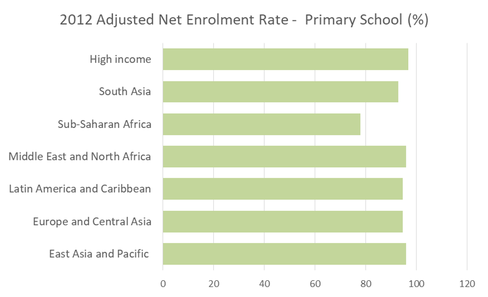
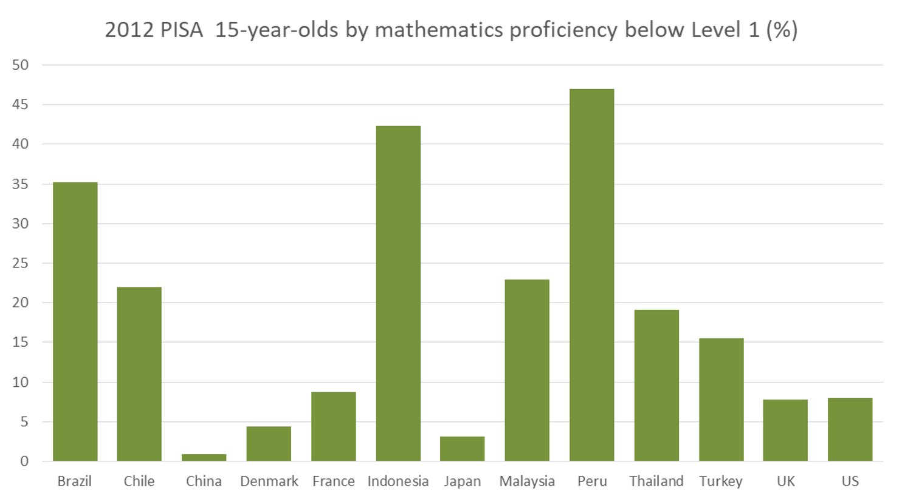
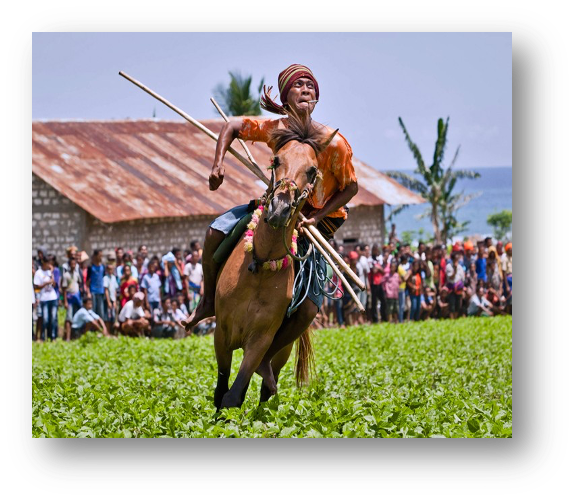
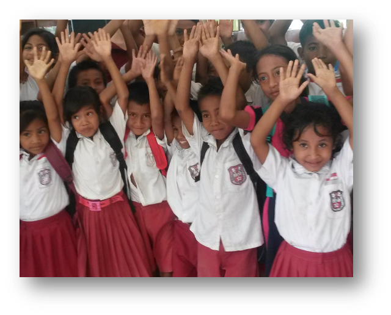
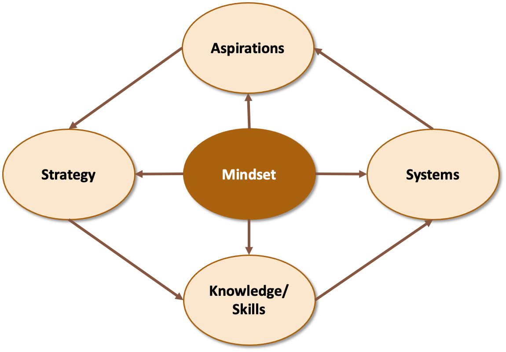

A Virtue and Character Strength Driven Approach to Quality Education
Shanti Agung
Gede Raka
Presented at SMERU Research Institute on April 9, 2018


Beliefs elicit behavioral responses 1
Studies on education in developing countries that examined the effect of beliefs on schooling outcomes concentrated on investigating students’ and parents’ beliefs 2
Do teachers’ beliefs affect their accountability and, thus, students’ learning in developing countries?
An identity is a definition, an interpretation, of the self… People who have problems with identity are generally struggling with the difficult aspects of defining the self, such as establishing long term goals, major affiliations, and basic values 1
Identity influences behavior and can account for many problems not well explained by earlier economic approaches 2
As Benabou and Tirole (2011) pointed out, the self-inference process and identity investment imply that accountability has an internal element (i.e., accountability to oneself)
Therefore, intervention in a teacher’s identity could be a means of improving accountability
Transformation Program: A Virtue and Character Strength Driven Approach
Yayasan Sasana Daya Cipta developed the program in partnership with Technology Research Center at Institut Teknologi Bandung
Initiated in 1993 in Bandung, it aims to improve education in Indonesia, focusing on school principals and teachers
In the 1990s, teachers were economically and socially marginalized
Post-reformation in the 2000s, education spending was increasing, but little improvement
MPS principle:
No quality education without quality teachers and school principals
In 2012, MPS initiated Transformation Program in East Sumba
Why Sumba?

Partnership:
Coverage:

The Transformation Program comprises five interconnected domains:

Implemented as “Transformational Leadership for Educators” training, it invites reframing the mindset on success, humanity, life purpose, education and its goals, teaching, and students
Teachers and school principals as leaders of transformation who sow and cultivate virtue
Aspiration is a strong desire for a better future, as in vision, goals, or strategic intent
Aspiration leads the transformation toward a better future
Strategy is guidelines of actions to achieve aspirations
Systems are mechanisms and forums that promote the learning and innovation process, spirits of continued improvement and growing together, and sustainability
Teachers and school principals are encouraged to develop knowledge and skills to fulfill their roles as leaders and change (transformation) agents
Basic skills: creativity for improving education quality
Specific skills: skill based on specific teaching assignments or themes, such as science and mathematics
Features of MPS Transformation Program that make it distinct:
Tiada hari tanpa melakukan kebaikan, tiada hari tanpa perbaikan
Thank You